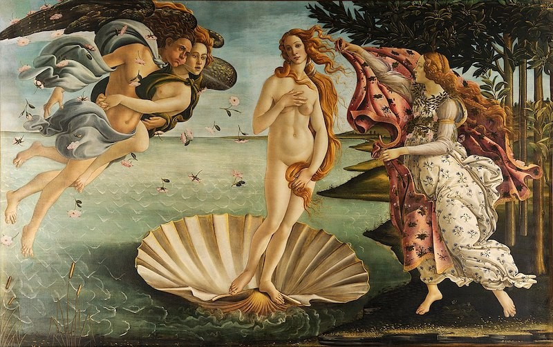
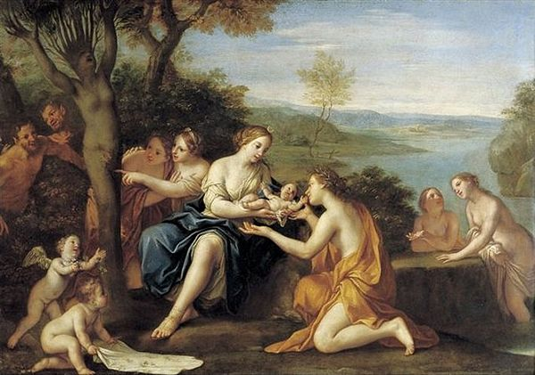

| Inicio | Apolo | Afrodita | Ares | Artemisa | Atenea | Deméter | Dionisio | Hades | Hefesto | Hera | Hermes | Hestia | Poseidón | Zeus |
AfroditaIntroducciónAfrodita también llamada Venus en la mitología romana, es la diosa del amor, la lujuria, la belleza, la sexualidad y la reproducción. Hija de Urano y esposa de Hefesto, con el cual no tuvo ningún hijo, los hijos que tuvo fueron frutos de infidelidades. Afrodita fue una de las divinidades más veneradas en la Antigüedad, contando con grandes templos en las principales ciudades y santuarios. Tal fue la fuerza de esta diosa que acabó por absorber a todas las divinidades menores con las que compartía algún tipo de ámbito, en un complejo proceso de sincretismo religioso que dio lugar a una gran variedad de cultos y advocaciones diferentes de la misma Afrodita.  NacimientoEl mito del origen de Afrodita está relacionado con la propia etimología de su nombre. El término griego aphrós significa espuma, y esto pudo llevar a la consolidación de la creencia de que esta diosa había nacido del mar. Según el mito más antiguo que ha llegado hasta nosotros, recogido por el poeta Hesíodo, tras arrancar Cronos los genitales a su padre Urano arrojó los despojos de esta acción al mar, en las costas de Pafos, en la isla de Chipre. De la mezcla del semen y la sangre de Urano con la espuma del océano, nació la diosa del amor, ya adulta. Algunos mitosMaldición de MirraLa madre de Mirra presumía que su hija era más hermosa que la mismísima Afrodita. Furiosa, la diosa instó a Mirra a cometer incesto con su padre Tías, rey de Asiria. Al sentir deseos por su padre, Mirra le contó a Hippolyte, La enfermera de la familia, la cual la ayudó con el plan. Hippolyte le dijo al rey acerca de una chica que quería estar con él, solo si estaban con las luces apagadas. Tías accedió y Mirra se unió con su padre en la oscuridad. Cuando Tías descubrió al fin este engaño gracias a una lámpara de aceite, montó en cólera y persiguió a su hija con un cuchillo. Mirra huyó de su padre y Afrodita, intiendo pena por la muchacha, la transformó en un árbol de mirra. Más tarde, fue ayudada a dar a luz por Ilitía, teniendo a Adonis. Amante de AresAfrodita engañaba a su esposo Hefesto con Ares en su propio lecho. Ares puso de guardia a Alectrión para que hiciera de
centinela en la puerta y le previniera a él de la llegada del día. Alectrión se durmió y Helios, Dios del sol que todo lo ve, le contó de la situación a Hefesto.
Enfurecido, Hefesto tramó un plan: Confeccionó uno red invisible tan fuerte y resistente que ningún hombre ni dios pudiese romperla, la puso sobre la cama y se
activaría con los rayos del sol en la mañana, atrapando a los amantes. |